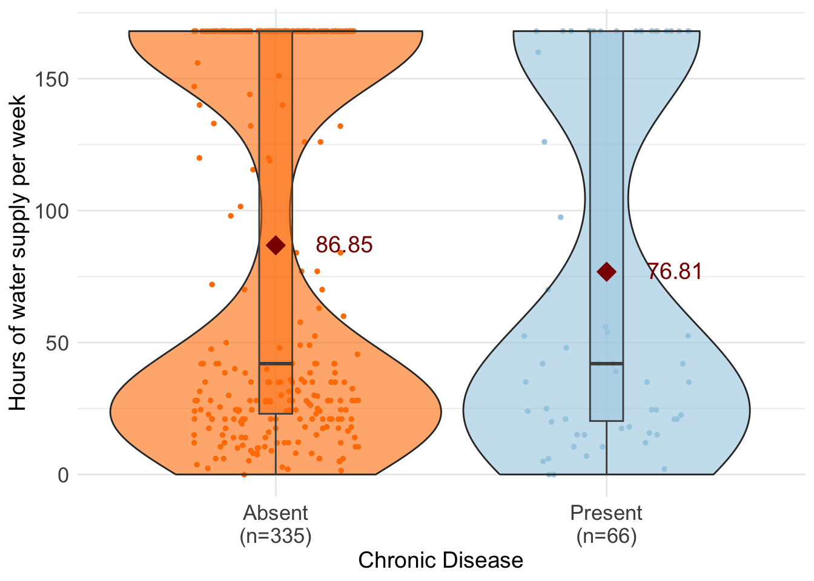

UROP_Brittany
2025-03-17
Last updated: 2025-03-18
Checks: 6 1
Knit directory: QUAIL-Mex/
This reproducible R Markdown analysis was created with workflowr (version 1.7.1). The Checks tab describes the reproducibility checks that were applied when the results were created. The Past versions tab lists the development history.
The R Markdown file has unstaged changes. To know which version of
the R Markdown file created these results, you’ll want to first commit
it to the Git repo. If you’re still working on the analysis, you can
ignore this warning. When you’re finished, you can run
wflow_publish to commit the R Markdown file and build the
HTML.
Great job! The global environment was empty. Objects defined in the global environment can affect the analysis in your R Markdown file in unknown ways. For reproduciblity it’s best to always run the code in an empty environment.
The command set.seed(20241009) was run prior to running
the code in the R Markdown file. Setting a seed ensures that any results
that rely on randomness, e.g. subsampling or permutations, are
reproducible.
Great job! Recording the operating system, R version, and package versions is critical for reproducibility.
Nice! There were no cached chunks for this analysis, so you can be confident that you successfully produced the results during this run.
Great job! Using relative paths to the files within your workflowr project makes it easier to run your code on other machines.
Great! You are using Git for version control. Tracking code development and connecting the code version to the results is critical for reproducibility.
The results in this page were generated with repository version 71cb9d7. See the Past versions tab to see a history of the changes made to the R Markdown and HTML files.
Note that you need to be careful to ensure that all relevant files for
the analysis have been committed to Git prior to generating the results
(you can use wflow_publish or
wflow_git_commit). workflowr only checks the R Markdown
file, but you know if there are other scripts or data files that it
depends on. Below is the status of the Git repository when the results
were generated:
Ignored files:
Ignored: .DS_Store
Ignored: .RData
Ignored: .Rhistory
Ignored: .Rproj.user/
Ignored: analysis/.DS_Store
Ignored: analysis/.RData
Ignored: analysis/.Rhistory
Ignored: analysis/Hrs_by_HWISE score.png
Ignored: analysis/odds_ratio_plot.png
Ignored: analysis/stacked_barplot.png
Ignored: code/.DS_Store
Ignored: data/.DS_Store
Unstaged changes:
Modified: analysis/UROP_Brittany.Rmd
Modified: stacked_barplot.png
Note that any generated files, e.g. HTML, png, CSS, etc., are not included in this status report because it is ok for generated content to have uncommitted changes.
These are the previous versions of the repository in which changes were
made to the R Markdown (analysis/UROP_Brittany.Rmd) and
HTML (docs/UROP_Brittany.html) files. If you’ve configured
a remote Git repository (see ?wflow_git_remote), click on
the hyperlinks in the table below to view the files as they were in that
past version.
| File | Version | Author | Date | Message |
|---|---|---|---|---|
| Rmd | 71cb9d7 | Paloma | 2025-03-17 | plots brittany |
| html | 71cb9d7 | Paloma | 2025-03-17 | plots brittany |
R Markdown
# loading data set
d <- read.csv("Cleaned_Dataset_Screening_HWISE_PSS_V2.csv")
# taking a quick look at first rows
head(d) ID D_YRBR D_LOC_TIME D_AGE D_HH_SIZE D_CHLD HLTH_SMK SES_SC_Total SEASON
1 1 1987 35 35 4 0 0 149 1
2 2 1990 32 32 12 2 1 196 1
3 3 1992 8 30 7 2 0 52 1
4 4 1982 32 40 4 1 0 214 1
5 5 1976 45 46 4 NA 0 117 1
6 6 1990 8 32 6 1 NA 220 1
W_WS_LOC HW_WORRY HW_INTERR HW_CLOTHES HW_PLANS HW_FOOD HW_HANDS HW_BODY
1 1 2 0 0 0 0 0 0
2 1 0 0 0 0 0 0 1
3 1 0 0 0 0 0 0 0
4 1 0 0 0 0 0 0 0
5 1 2 1 1 1 1 0 1
6 1 1 1 2 1 3 1 1
HW_DRINK HW_ANGRY HW_SLEEP HW_NONE HW_SHAME PSS1 PSS2 PSS3 PSS4 PSS5 PSS6
1 0 1 0 1 0 2 3 2 4 3 2
2 0 2 0 2 0 2 2 3 3 3 4
3 0 1 0 0 0 2 2 2 2 2 3
4 0 1 0 0 1 2 3 2 3 3 3
5 0 1 0 3 1 2 2 3 2 2 2
6 0 1 0 2 2 2 2 3 2 3 3
PSS7 PSS8 PSS9 PSS10 PSS11 PSS12 PSS13 PSS14 HLTH_CPAIN_CAT HLTH_CDIS_CAT
1 2 1 2 3 1 4 2 1 0 1
2 3 2 3 2 2 4 3 2 0 0
3 3 2 3 2 2 2 3 2 0 0
4 3 1 3 2 2 2 3 1 0 0
5 3 2 2 1 3 3 2 3 1 0
6 4 1 3 3 2 3 1 2 0 0
HW_TOTAL W_WC_WI HRS_WEEK
1 4 1 168
2 5 0 35
3 1 1 NA
4 2 1 28
5 12 1 156
6 15 1 12d$HLTH_CDIS_CAT <- as.factor(d$HLTH_CDIS_CAT) # HLTH_CDIS_CAT = chronic disease
# HW_TOTAL = Total HWISE score
# HRS_WEEK = Hours of water supply per weekd <- d %>%
filter(!is.na(HLTH_CDIS_CAT)) %>%
mutate(HLTH_CDIS_CAT = case_when(
HLTH_CDIS_CAT == "0" ~ "Absent",
HLTH_CDIS_CAT == "1" ~ "Present",
HLTH_CDIS_CAT == !is.na(.) ~ "other", # Assign "other" to all non-missing values that are not "yes" or "no"
TRUE ~ NA_character_
))
# Count the number of data points per Water insecurity level (HWISE)
summary_stats <- d %>%
group_by(HLTH_CDIS_CAT) %>%
summarise(Count = n(), na.rm = TRUE)
hw.total <- d$HW_TOTAL
means <- aggregate(hw.total ~ HLTH_CDIS_CAT, d, mean)
means$hw.total <- round(means$hw.total, 2)
color_palette <- c("#ff7f00", "#a6cee3", "#1f78b4", "orange")
ggplot(d, aes(x = HLTH_CDIS_CAT,
y = HW_TOTAL,
fill = HLTH_CDIS_CAT)) +
geom_jitter(aes(color = HLTH_CDIS_CAT),
size = 1, width = 0.25) +
# Jitter adds individual data points
geom_violin(alpha = 0.6, width = 1) +
geom_boxplot(outlier.shape = 1, alpha = 0.5,
width = 0.15, color = "grey30") + # Boxplot
geom_text(data = means,
aes(label = hw.total, y = hw.total + 0.5, hjust=-0.7),
size = 5, color = "darkred") + #adds average labels
theme_minimal() +
labs(#title = "Hours water of supply by water Insecurity group\n(HWISE)",
x = "Chronic Disease",
y = "HWISE score") +
scale_fill_manual(values = color_palette) + # Custom colors for boxes
scale_color_manual(values = color_palette) + # Custom colors for points +
stat_summary(fun.y=mean, geom="point", shape=23,
size=4, color="darkred", fill="darkred") +
theme(legend.position = "none",
axis.text = element_text(size = 13),
axis.title = element_text(size = 14),
plot.title = element_text(size = 18)) +
scale_x_discrete(labels = paste0(summary_stats$HLTH_CDIS_CAT,
"\n(n=", summary_stats$Count, ")"))Warning: The `fun.y` argument of `stat_summary()` is deprecated as of ggplot2 3.3.0.
ℹ Please use the `fun` argument instead.
This warning is displayed once every 8 hours.
Call `lifecycle::last_lifecycle_warnings()` to see where this warning was
generated.Warning: Removed 10 rows containing non-finite outside the scale range
(`stat_ydensity()`).Warning: Removed 10 rows containing non-finite outside the scale range
(`stat_boxplot()`).Warning: Removed 10 rows containing non-finite outside the scale range
(`stat_summary()`).Warning: Removed 10 rows containing missing values or values outside the scale range
(`geom_point()`).
| Version | Author | Date |
|---|---|---|
| 71cb9d7 | Paloma | 2025-03-17 |
# Count the number of data points per Water insecurity level (HWISE)
summary_stats <- d %>%
group_by(HLTH_CDIS_CAT) %>%
summarise(Count = n(), na.rm = TRUE)
hw.total <- d$HRS_WEEK
means <- aggregate(hw.total ~ HLTH_CDIS_CAT, d, mean)
means$hw.total <- round(means$hw.total, 2)
ggplot(d, aes(x = HLTH_CDIS_CAT,
y = HRS_WEEK,
fill = HLTH_CDIS_CAT)) +
geom_jitter(aes(color = HLTH_CDIS_CAT),
size = 1, width = 0.25) +
# Jitter adds individual data points
geom_violin(alpha = 0.6, width = 1) +
geom_boxplot(outlier.shape = 1, alpha = 0.5,
width = 0.1, color = "grey30") + # Boxplot
geom_text(data = means,
aes(label = hw.total, y = hw.total + 0.5, hjust=-0.7),
size = 5, color = "darkred") + #adds average labels
theme_minimal() +
labs(#title = "Hours water of supply by water Insecurity group\n(HWISE)",
x = "Chronic Disease",
y = "Hours of water supply per week") +
scale_fill_manual(values = color_palette) + # Custom colors for boxes
scale_color_manual(values = color_palette) + # Custom colors for points +
stat_summary(fun.y=mean, geom="point", shape=23,
size=4, color="darkred", fill="darkred") +
theme(legend.position = "none",
axis.text = element_text(size = 13),
axis.title = element_text(size = 14),
plot.title = element_text(size = 18)) +
scale_x_discrete(labels = paste0(summary_stats$HLTH_CDIS_CAT,
"\n(n=", summary_stats$Count, ")")) Warning: Removed 38 rows containing non-finite outside the scale range
(`stat_ydensity()`).Warning: Removed 38 rows containing non-finite outside the scale range
(`stat_boxplot()`).Warning: Removed 38 rows containing non-finite outside the scale range
(`stat_summary()`).Warning: Removed 38 rows containing missing values or values outside the scale range
(`geom_point()`).
| Version | Author | Date |
|---|---|---|
| 71cb9d7 | Paloma | 2025-03-17 |
# Categorize HW_TOTAL into two groups
d <- d %>%
mutate(HW_TOTAL_category16 = case_when(
HW_TOTAL >= 16 ~ "High",
HW_TOTAL < 16 ~ "Low",
))summary_stats <- d %>%
group_by(HLTH_CDIS_CAT) %>%
summarise(Count = n(), na.rm = TRUE, .groups = 'drop')
color_palette <- c("#1f78b4", "#a6cee3", "#fdbf6f", "#ff7f00")
ggsave("stacked_barplot.png", width = 6, height = 3, dpi = 300) Warning: Removed 38 rows containing non-finite outside the scale range
(`stat_ydensity()`).Warning: Removed 38 rows containing non-finite outside the scale range
(`stat_boxplot()`).Warning: Removed 38 rows containing non-finite outside the scale range
(`stat_summary()`).Warning: Removed 38 rows containing missing values or values outside the scale range
(`geom_point()`).ggplot(d, aes(x = HLTH_CDIS_CAT, fill = HW_TOTAL_category16)) +
geom_bar(position = "fill", alpha = 0.8, width=0.5) + # "fill" makes the bars proportional (percentages)
labs(title = "Chronic disease vs. HWISE",
subtitle = "using HWISE = 16 as threshold",
x = "Presence/absence disease",
y = "Percentage",
fill = "HWISE\nWater insecurity\ncategory") +
scale_fill_manual(values = color_palette) +
scale_y_continuous(labels = scales::percent_format(scale = 100)) +
theme_minimal() +
theme(
axis.text = element_text(size = 13),
axis.title = element_text(size = 14),
plot.title = element_text(size = 18),
plot.margin = margin(1, 1, 1, 1)
) +
scale_x_discrete(labels = paste0(summary_stats$HLTH_CDIS_CAT,
"\n(n=", summary_stats$Count, ")")) +
coord_flip() 
| Version | Author | Date |
|---|---|---|
| 71cb9d7 | Paloma | 2025-03-17 |
summary_stats <- d %>%
group_by(HW_TOTAL_category16) %>%
summarise(Count = n(), na.rm = TRUE, .groups = 'drop')
ggplot(d, aes(x = HW_TOTAL_category16, fill = HLTH_CDIS_CAT)) +
geom_bar(position = "fill", alpha = 0.8, width=0.5) + # "fill" makes the bars proportional (percentages)
labs(title = "Chronic disease by water sec\ncategory",
subtitle = "Threshold is HWISE = 16)",
x = "Water security levels",
y = "Percentage",
fill = "Presence of\nchronic disease") +
scale_fill_manual(values = color_palette) +
scale_y_continuous(labels = scales::percent_format(scale = 100)) +
theme_minimal() +
theme(
axis.text = element_text(size = 13),
axis.title = element_text(size = 14),
plot.title = element_text(size = 18),
plot.margin = margin(1, 1, 1, 1)
) +
scale_x_discrete(labels = paste0(summary_stats$HW_TOTAL_category16,
"\n(n=", summary_stats$Count, ")")) +
coord_flip() 
| Version | Author | Date |
|---|---|---|
| 71cb9d7 | Paloma | 2025-03-17 |
d <- d %>%
filter(!is.na(HW_TOTAL)) %>% # Remove missing values
mutate(HW_TOTAL_category4 = case_when(
HW_TOTAL >= 0 & HW_TOTAL <= 2 ~ "No-to-Marginal",
HW_TOTAL >= 3 & HW_TOTAL <= 11 ~ "Low",
HW_TOTAL >= 12 & HW_TOTAL <= 23 ~ "Moderate",
HW_TOTAL >= 24 & HW_TOTAL <= 36 ~ "High"
))
d$HW_TOTAL_category4 <- factor(d$HW_TOTAL_category4, levels = c("No-to-Marginal", "Low", "Moderate", "High"))summary_stats <- d %>%
group_by(HLTH_CDIS_CAT) %>%
summarise(Count = n(), na.rm = TRUE, .groups = 'drop')
color_palette <- c("#1f78b4", "#a6cee3", "#fdbf6f", "#ff7f00")
ggsave("stacked_barplot.png", width = 6, height = 3, dpi = 300)
ggplot(d, aes(x = HLTH_CDIS_CAT, fill = HW_TOTAL_category4)) +
geom_bar(position = "fill", alpha = 0.8, width=0.5) + # "fill" makes the bars proportional (percentages)
labs(title = "Chronic disease vs. HWISE categories",
subtitle = "Using HWISE 4 categories",
x = "Presence/absence disease",
y = "Percentage",
fill = "HWISE\nWater insecurity\ncategory") +
scale_fill_manual(values = color_palette) +
scale_y_continuous(labels = scales::percent_format(scale = 100)) +
theme_minimal() +
theme(
axis.text = element_text(size = 13),
axis.title = element_text(size = 14),
plot.title = element_text(size = 18),
plot.margin = margin(1, 1, 1, 1)
) +
scale_x_discrete(labels = paste0(summary_stats$HLTH_CDIS_CAT,
"\n(n=", summary_stats$Count, ")")) +
coord_flip() 
summary_stats <- d %>%
group_by(HW_TOTAL_category4) %>%
summarise(Count = n(), na.rm = TRUE, .groups = 'drop')
ggplot(d, aes(x = HW_TOTAL_category4, fill = HLTH_CDIS_CAT)) +
geom_bar(position = "fill", alpha = 0.8, width=0.5) +
labs(title = "HWISE category vs chronic disease",
subtitle = "",
x = "Water security levels",
y = "Percentage",
fill = "Presence of\nchronic disease") +
scale_fill_manual(values = color_palette) +
scale_y_continuous(labels = scales::percent_format(scale = 100)) +
theme_minimal() +
theme(
axis.text = element_text(size = 13),
axis.title = element_text(size = 14),
plot.title = element_text(size = 18),
plot.margin = margin(1, 1, 1, 1)
) +
scale_x_discrete(labels = paste0(summary_stats$HW_TOTAL_category4,
"\n(n=", summary_stats$Count, ")")) +
coord_flip() Testing associations
Contingency table comparing cases in each category
# Create a contingency table
contingency_table16 <- table(d$HW_TOTAL_category16, d$HLTH_CDIS_CAT)
contingency_table8 <- table(d$HW_TOTAL_category8, d$HLTH_CDIS_CAT)
contingency_table4 <- table(d$HW_TOTAL_category4, d$HLTH_CDIS_CAT)
# Print the table
print(contingency_table16)
Absent Present
Low 282 51
High 46 12print(contingency_table8)
Absent Present
Low 165 29
High 163 34print(contingency_table4)
Absent Present
No-to-Marginal 62 14
Low 177 28
Moderate 83 21
High 6 0Cramer’s V
# Compute Cramér's V for effect size
cat("Compute Cramér's V for effect size:\n 0.1 → Small association\n 0.3 → Moderate association\n 0.5 → Strong association")Compute Cramér's V for effect size:
0.1 → Small association
0.3 → Moderate association
0.5 → Strong associationcramerV(contingency_table16)Cramer V
0.05196 cramerV(contingency_table8)Cramer V
0.03142 cramerV(contingency_table4)Cramer V
0.09657 Pairwise Fisher’s Exact Test
Using Bonferroni correction for multiple comparisons
# Run Fisher’s Exact Test
fisher_test16 <- fisher.test(contingency_table16)
fisher_test8 <- fisher.test(contingency_table8)
fisher_test4 <- fisher.test(contingency_table4)
# Print results
print(fisher_test16)
Fisher's Exact Test for Count Data
data: contingency_table16
p-value = 0.3329
alternative hypothesis: true odds ratio is not equal to 1
95 percent confidence interval:
0.6490251 3.0053960
sample estimates:
odds ratio
1.440984 print(fisher_test8)
Fisher's Exact Test for Count Data
data: contingency_table8
p-value = 0.5833
alternative hypothesis: true odds ratio is not equal to 1
95 percent confidence interval:
0.6672082 2.1203461
sample estimates:
odds ratio
1.186278 print(fisher_test4)
Fisher's Exact Test for Count Data
data: contingency_table4
p-value = 0.333
alternative hypothesis: two.sided# Get unique categories of HW_TOTAL_category
categories16 <- levels(d$HW_TOTAL_category16)
categories8 <- levels(d$HW_TOTAL_category8)
categories4 <- levels(d$HW_TOTAL_category4)
# Create an empty list to store results
pairwise_results16 <- list()
pairwise_results8 <- list()
pairwise_results4 <- list()
# Loop through all pairs of HW_TOTAL_category
for (i in 1:(length(categories16) - 1)) {
for (j in (i + 1):length(categories16)) {
cat1 <- categories16[i]
cat2 <- categories16[j]
# Subset the data for the two categories
subset_data <- d %>%
filter(HW_TOTAL_category16 %in% c(cat1, cat2))
# Create a 2xN contingency table
sub_table <- table(subset_data$HW_TOTAL_category16, subset_data$HLTH_CDIS_CAT)
# Run Fisher’s Exact Test
fisher_res <- fisher.test(sub_table)
# Store results in a data frame
pairwise_results16[[paste(cat1, "vs", cat2)]] <- data.frame(
Group1 = cat1,
Group2 = cat2,
p_value = fisher_res$p.value
)
}
}
# Combine results into a single data frame
pairwise_fisher_results16 <- bind_rows(pairwise_results16)
# Apply Bonferroni correction for multiple comparisons
pairwise_fisher_results16 <- pairwise_fisher_results16 %>%
mutate(p_adj = p.adjust(p_value, method = "bonferroni"))
# Print results
print(pairwise_fisher_results16) Group1 Group2 p_value p_adj
1 Low High 0.3329125 0.3329125If p_adj < 0.05, it indicates a significant difference
If p_adj > 0.05, the difference is not statistically significant after Bonferroni correction
# Loop through all pairs of HW_TOTAL_category
for (i in 1:(length(categories8) - 1)) {
for (j in (i + 1):length(categories8)) {
cat1 <- categories8[i]
cat2 <- categories8[j]
# Subset the data for the two categories
subset_data <- d %>%
filter(HW_TOTAL_category8 %in% c(cat1, cat2))
# Create a 2xN contingency table
sub_table <- table(subset_data$HW_TOTAL_category8, subset_data$HLTH_CDIS_CAT)
# Run Fisher’s Exact Test
fisher_res <- fisher.test(sub_table)
# Store results in a data frame
pairwise_results8[[paste(cat1, "vs", cat2)]] <- data.frame(
Group1 = cat1,
Group2 = cat2,
p_value = fisher_res$p.value
)
}
}
# Combine results into a single data frame
pairwise_fisher_results8 <- bind_rows(pairwise_results8)
# Apply Bonferroni correction for multiple comparisons
pairwise_fisher_results8 <- pairwise_fisher_results8 %>%
mutate(p_adj = p.adjust(p_value, method = "bonferroni"))
# Print results
print(pairwise_fisher_results8) Group1 Group2 p_value p_adj
1 Low High 0.5832546 0.5832546# Loop through all pairs of HW_TOTAL_category
for (i in 1:(length(categories4) - 1)) {
for (j in (i + 1):length(categories4)) {
cat1 <- categories4[i]
cat2 <- categories4[j]
# Subset the data for the two categories
subset_data <- d %>%
filter(HW_TOTAL_category4 %in% c(cat1, cat2))
# Create a 2xN contingency table
sub_table <- table(subset_data$HW_TOTAL_category4, subset_data$HLTH_CDIS_CAT)
# Run Fisher’s Exact Test
fisher_res <- fisher.test(sub_table)
# Store results in a data frame
pairwise_results4[[paste(cat1, "vs", cat2)]] <- data.frame(
Group1 = cat1,
Group2 = cat2,
p_value = fisher_res$p.value
)
}
}
# Combine results into a single data frame
pairwise_fisher_results4 <- bind_rows(pairwise_results4)
# Apply Bonferroni correction for multiple comparisons
pairwise_fisher_results4 <- pairwise_fisher_results4 %>%
mutate(p_adj = p.adjust(p_value, method = "bonferroni"))
# Print results
print(pairwise_fisher_results4) Group1 Group2 p_value p_adj
1 No-to-Marginal Low 0.3478467 1.0000000
2 No-to-Marginal Moderate 0.8498057 1.0000000
3 No-to-Marginal High 0.5832276 1.0000000
4 Low Moderate 0.1417344 0.8504063
5 Low High 1.0000000 1.0000000
6 Moderate High 0.5930341 1.0000000


Regressions
Why Logistic Regression? Dependent Variable is categorical (Nominal variable with multiple categories). Independent Variable (HW_TOTAL_category) is categorical. Logistic regression is appropriate for categorical outcomes, unlike linear regression which assumes continuous data.
Need to run binary logistic regression.
# Ensure variables are factors
#d <- d %>%
# mutate(HW_TOTAL_category = as.factor(HW_TOTAL_category),
# HLTH_CDIS_CAT = as.factor(HLTH_CDIS_CAT))
d <- d %>%
mutate(HLTH_CDIS_CAT = case_when(
HLTH_CDIS_CAT == "Absent" ~ "0",
HLTH_CDIS_CAT == "Present" ~ "1",
HLTH_CDIS_CAT == !is.na(.) ~ "other", # Assign "other" to all non-missing values that are not "yes" or "no"
TRUE ~ NA_character_
))
d$HLTH_CDIS_CAT <- as.numeric(d$HLTH_CDIS_CAT)
# Run Binary Logistic Regression
logit_model1.16 <- glm(HLTH_CDIS_CAT ~ HW_TOTAL_category16,
data = d,
family = binomial)
# Show summary of model
summary(logit_model1.16)
Call:
glm(formula = HLTH_CDIS_CAT ~ HW_TOTAL_category16, family = binomial,
data = d)
Coefficients:
Estimate Std. Error z value Pr(>|z|)
(Intercept) -1.7101 0.1522 -11.238 <2e-16 ***
HW_TOTAL_category16High 0.3663 0.3581 1.023 0.306
---
Signif. codes: 0 '***' 0.001 '**' 0.01 '*' 0.05 '.' 0.1 ' ' 1
(Dispersion parameter for binomial family taken to be 1)
Null deviance: 345.28 on 390 degrees of freedom
Residual deviance: 344.28 on 389 degrees of freedom
AIC: 348.28
Number of Fisher Scoring iterations: 4# Run Binary Logistic Regression
logit_model1.8 <- glm(HLTH_CDIS_CAT ~ HW_TOTAL_category8,
data = d,
family = binomial)
# Show summary of model
summary(logit_model1.8)
Call:
glm(formula = HLTH_CDIS_CAT ~ HW_TOTAL_category8, family = binomial,
data = d)
Coefficients:
Estimate Std. Error z value Pr(>|z|)
(Intercept) -1.7386 0.2014 -8.635 <2e-16 ***
HW_TOTAL_category8High 0.1713 0.2758 0.621 0.535
---
Signif. codes: 0 '***' 0.001 '**' 0.01 '*' 0.05 '.' 0.1 ' ' 1
(Dispersion parameter for binomial family taken to be 1)
Null deviance: 345.28 on 390 degrees of freedom
Residual deviance: 344.89 on 389 degrees of freedom
AIC: 348.89
Number of Fisher Scoring iterations: 4# Run Binary Logistic Regression
logit_model1.4 <- glm(HLTH_CDIS_CAT ~ HW_TOTAL_category4,
data = d,
family = binomial)
# Show summary of model
summary(logit_model1.4)
Call:
glm(formula = HLTH_CDIS_CAT ~ HW_TOTAL_category4, family = binomial,
data = d)
Coefficients:
Estimate Std. Error z value Pr(>|z|)
(Intercept) -1.4881 0.2959 -5.029 4.93e-07 ***
HW_TOTAL_category4Low -0.3559 0.3591 -0.991 0.322
HW_TOTAL_category4Moderate 0.1138 0.3837 0.296 0.767
HW_TOTAL_category4High -15.0780 979.6101 -0.015 0.988
---
Signif. codes: 0 '***' 0.001 '**' 0.01 '*' 0.05 '.' 0.1 ' ' 1
(Dispersion parameter for binomial family taken to be 1)
Null deviance: 345.28 on 390 degrees of freedom
Residual deviance: 340.72 on 387 degrees of freedom
AIC: 348.72
Number of Fisher Scoring iterations: 15logit_model2 <- glm(HLTH_CDIS_CAT ~ HRS_WEEK + SES_SC_Total + SEASON,
data = d,
family = binomial)
summary(logit_model2)
Call:
glm(formula = HLTH_CDIS_CAT ~ HRS_WEEK + SES_SC_Total + SEASON,
family = binomial, data = d)
Coefficients:
Estimate Std. Error z value Pr(>|z|)
(Intercept) -1.490e+00 5.325e-01 -2.798 0.00514 **
HRS_WEEK -8.216e-05 2.293e-03 -0.036 0.97142
SES_SC_Total 4.412e-04 3.587e-03 0.123 0.90210
SEASON -5.653e-01 3.256e-01 -1.736 0.08249 .
---
Signif. codes: 0 '***' 0.001 '**' 0.01 '*' 0.05 '.' 0.1 ' ' 1
(Dispersion parameter for binomial family taken to be 1)
Null deviance: 263.48 on 308 degrees of freedom
Residual deviance: 260.35 on 305 degrees of freedom
(82 observations deleted due to missingness)
AIC: 268.35
Number of Fisher Scoring iterations: 4logit_model3 <- glm(HLTH_CDIS_CAT ~ HRS_WEEK,
data = d,
family = binomial)
summary(logit_model3)
Call:
glm(formula = HLTH_CDIS_CAT ~ HRS_WEEK, family = binomial, data = d)
Coefficients:
Estimate Std. Error z value Pr(>|z|)
(Intercept) -1.443411 0.217887 -6.625 3.48e-11 ***
HRS_WEEK -0.001763 0.002070 -0.852 0.394
---
Signif. codes: 0 '***' 0.001 '**' 0.01 '*' 0.05 '.' 0.1 ' ' 1
(Dispersion parameter for binomial family taken to be 1)
Null deviance: 322.20 on 353 degrees of freedom
Residual deviance: 321.46 on 352 degrees of freedom
(37 observations deleted due to missingness)
AIC: 325.46
Number of Fisher Scoring iterations: 4# Compute odds ratios
exp(coef(logit_model1.16)) (Intercept) HW_TOTAL_category16High
0.1808511 1.4424552 exp(coef(logit_model1.8)) (Intercept) HW_TOTAL_category8High
0.1757576 1.1867992 exp(coef(logit_model1.4)) (Intercept) HW_TOTAL_category4Low
2.258065e-01 7.005650e-01
HW_TOTAL_category4Moderate HW_TOTAL_category4High
1.120482e+00 2.829512e-07 exp(coef(logit_model2)) # these are not valid (non-categorical predictors) (Intercept) HRS_WEEK SES_SC_Total SEASON
0.2254107 0.9999178 1.0004413 0.5681713 exp(coef(logit_model3)) # these are not valid(Intercept) HRS_WEEK
0.2361209 0.9982383 ✔ Odds ratios < 1 → Decreased likelihood
✔ Odds ratios > 1 → Increased likelihood
Regressions
1.b Variable descriptions for quick reference
Ordered alphabetically
| Variable | Description | Class | Values |
|---|---|---|---|
| D_AGE | Participants’ age | Numeric | 18:49 |
| D_CHLD | Number of children participant has birthed | Numeric | 0:8 |
| D_HH_SIZE | Household size | Numeric | 2:40 |
| D_LOC_TIME | For how long have you lived in this neighborhood? | Numeric | 1:46 (years) |
| HLTH_CDIS_CAT | Presence of chronic disease | Categorical (Binary) | 1 = yes, 0 = no |
| HLTH_CPAIN_CAT | Presence of chronic pain | Categorical (Binary) | 1 = yes, 0 = no |
| HLTH_SMK | Tobacco smoker | Categorical (Binary) | 1 = yes, 0 = no |
| HRS_WEEK | Hours of water supply in the household per week | Numeric | 0:168 |
| HW_TOTAL | Sum of all 12-items in HWISE questionnaire | Numeric | 0:27 |
| MX28_WQ_COMP | Perception of water service as worse, same, or better than rest of Mexico City | Categorical (Ordinal) | 0 = worse, 1 = same, 2 = better |
| PSS_TOTAL | Total Perceived Stress Score | Numeric | -19:19 |
| SEASON | Fall or Spring (when data collection happened) | Categorical (Binary) | Fall = 1, Spring = 0 |
| SES_SC_Total | Socioeconomic status score | Numeric | 25:263 |
| W_WS_LOC | Classification of neighborhoods as water secure or insecure | Categorical (Binary) | 1 = water insecure, 0 = water secure |
| W_WC_WI | Classification of water supply as continuous or intermittent | Categorical (Binary) | 1 = intermittent, 0 = continuous |
2 Data preparation
We remove rows with missing data.
HW_TOTAL is calculated by adding up all the HWISE scores; PSS_TOTAL is calculated by adding up PSS 1,2,3, 8, 11, 12, 14, and substracting 4,5,6,7,9,10, and 13.
# Function to count missing information per varaible
create_na_table <- function(data) {
# Create a data frame with variable names and count of missing values
na_info <- data.frame(
Variable = names(data),
Missing_Values = colSums(is.na(data))
) %>%
arrange(desc(Missing_Values))
# Generate a kable table
kable(na_info, caption = "Number of Missing Values per Variable")
}# Load the dataset
data_path = "data"
data <- read.csv(file.path(data_path, "Cleaned_Dataset_Screening_HWISE_PSS_V4.csv"),
stringsAsFactors = FALSE,
na.strings = c("", "N/A", "NA", "pending"))3 Results
3.1 HWISE scores, variable set 1
The regression results for HW is summarized as follows.
# Check unique values to confirm only 0 and 1 remain
table(data$HLTH_CDIS_CAT)
0 1
335 66 dim(data)[1] 402 47# Define dependent (outcome) variable
outcome_var <- "HLTH_CDIS_CAT" # Binary outcome (0 = negative, 1 = positive)
# Define independent (predictor) variables
predictors <- c("MX8_TRUST", "MX28_WQ_COMP", "MX26_EM_HHW_TYPE", "D_LOC_TIME", "D_AGE", "D_HH_SIZE", "HLTH_SMK", "D_CHLD", "SES_SC_Total", "SEASON", "W_WS_LOC", "HW_TOTAL", "W_WC_WI", "HRS_WEEK", "PSS_TOTAL", "HW_WORRY")
# Run univariate logistic regression for each predictor
univariate_results <- list()
aic_values <- data.frame(Predictor = character(), AIC = numeric(), stringsAsFactors = FALSE)
data <- data %>% drop_na(all_of(predictors))
dim(data)[1] 219 47for (var in predictors) {
# Build formula dynamically
formula <- as.formula(paste(outcome_var, "~", var))
# Fit univariate logistic regression model
model <- glm(formula, data = data, family = binomial)
# Store model summary
univariate_results[[var]] <- summary(model)
# Store AIC values
aic_values <- rbind(aic_values, data.frame(Predictor = var, AIC = AIC(model)))
}
univariate_results$MX8_TRUST
Call:
glm(formula = formula, family = binomial, data = data)
Coefficients:
Estimate Std. Error z value Pr(>|z|)
(Intercept) -2.1102 0.5294 -3.986 6.73e-05 ***
MX8_TRUST1 -14.4559 1696.7344 -0.009 0.993
MX8_TRUST2 0.4318 0.5681 0.760 0.447
MX8_TRUSTother -14.4559 1696.7344 -0.009 0.993
---
Signif. codes: 0 '***' 0.001 '**' 0.01 '*' 0.05 '.' 0.1 ' ' 1
(Dispersion parameter for binomial family taken to be 1)
Null deviance: 182.17 on 218 degrees of freedom
Residual deviance: 180.27 on 215 degrees of freedom
AIC: 188.27
Number of Fisher Scoring iterations: 15
$MX28_WQ_COMP
Call:
glm(formula = formula, family = binomial, data = data)
Coefficients:
Estimate Std. Error z value Pr(>|z|)
(Intercept) -1.4781 0.2671 -5.533 3.14e-08 ***
MX28_WQ_COMP -0.3479 0.2478 -1.404 0.16
---
Signif. codes: 0 '***' 0.001 '**' 0.01 '*' 0.05 '.' 0.1 ' ' 1
(Dispersion parameter for binomial family taken to be 1)
Null deviance: 182.17 on 218 degrees of freedom
Residual deviance: 180.13 on 217 degrees of freedom
AIC: 184.13
Number of Fisher Scoring iterations: 4
$MX26_EM_HHW_TYPE
Call:
glm(formula = formula, family = binomial, data = data)
Coefficients:
Estimate Std. Error z value Pr(>|z|)
(Intercept) -1.5459 0.3055 -5.061 4.18e-07 ***
MX26_EM_HHW_TYPE1 -0.3380 0.3924 -0.861 0.389
MX26_EM_HHW_TYPEother -13.0201 882.7434 -0.015 0.988
---
Signif. codes: 0 '***' 0.001 '**' 0.01 '*' 0.05 '.' 0.1 ' ' 1
(Dispersion parameter for binomial family taken to be 1)
Null deviance: 182.17 on 218 degrees of freedom
Residual deviance: 181.13 on 216 degrees of freedom
AIC: 187.13
Number of Fisher Scoring iterations: 13
$D_LOC_TIME
Call:
glm(formula = formula, family = binomial, data = data)
Coefficients:
Estimate Std. Error z value Pr(>|z|)
(Intercept) -2.44446 0.47349 -5.163 2.44e-07 ***
D_LOC_TIME 0.02881 0.01742 1.654 0.0982 .
---
Signif. codes: 0 '***' 0.001 '**' 0.01 '*' 0.05 '.' 0.1 ' ' 1
(Dispersion parameter for binomial family taken to be 1)
Null deviance: 182.17 on 218 degrees of freedom
Residual deviance: 179.36 on 217 degrees of freedom
AIC: 183.36
Number of Fisher Scoring iterations: 4
$D_AGE
Call:
glm(formula = formula, family = binomial, data = data)
Coefficients:
Estimate Std. Error z value Pr(>|z|)
(Intercept) -3.36380 0.89606 -3.754 0.000174 ***
D_AGE 0.04845 0.02576 1.880 0.060063 .
---
Signif. codes: 0 '***' 0.001 '**' 0.01 '*' 0.05 '.' 0.1 ' ' 1
(Dispersion parameter for binomial family taken to be 1)
Null deviance: 182.17 on 218 degrees of freedom
Residual deviance: 178.53 on 217 degrees of freedom
AIC: 182.53
Number of Fisher Scoring iterations: 4
$D_HH_SIZE
Call:
glm(formula = formula, family = binomial, data = data)
Coefficients:
Estimate Std. Error z value Pr(>|z|)
(Intercept) -0.95299 0.48490 -1.965 0.0494 *
D_HH_SIZE -0.16559 0.09783 -1.693 0.0905 .
---
Signif. codes: 0 '***' 0.001 '**' 0.01 '*' 0.05 '.' 0.1 ' ' 1
(Dispersion parameter for binomial family taken to be 1)
Null deviance: 182.17 on 218 degrees of freedom
Residual deviance: 178.11 on 217 degrees of freedom
AIC: 182.11
Number of Fisher Scoring iterations: 5
$HLTH_SMK
Call:
glm(formula = formula, family = binomial, data = data)
Coefficients:
Estimate Std. Error z value Pr(>|z|)
(Intercept) -1.7918 0.2118 -8.458 <2e-16 ***
HLTH_SMK 0.1495 0.4938 0.303 0.762
---
Signif. codes: 0 '***' 0.001 '**' 0.01 '*' 0.05 '.' 0.1 ' ' 1
(Dispersion parameter for binomial family taken to be 1)
Null deviance: 182.17 on 218 degrees of freedom
Residual deviance: 182.08 on 217 degrees of freedom
AIC: 186.08
Number of Fisher Scoring iterations: 4
$D_CHLD
Call:
glm(formula = formula, family = binomial, data = data)
Coefficients:
Estimate Std. Error z value Pr(>|z|)
(Intercept) -1.4745 0.3221 -4.578 4.7e-06 ***
D_CHLD -0.1660 0.1557 -1.066 0.287
---
Signif. codes: 0 '***' 0.001 '**' 0.01 '*' 0.05 '.' 0.1 ' ' 1
(Dispersion parameter for binomial family taken to be 1)
Null deviance: 182.17 on 218 degrees of freedom
Residual deviance: 181.01 on 217 degrees of freedom
AIC: 185.01
Number of Fisher Scoring iterations: 4
$SES_SC_Total
Call:
glm(formula = formula, family = binomial, data = data)
Coefficients:
Estimate Std. Error z value Pr(>|z|)
(Intercept) -1.977505 0.595045 -3.323 0.00089 ***
SES_SC_Total 0.001589 0.004185 0.380 0.70411
---
Signif. codes: 0 '***' 0.001 '**' 0.01 '*' 0.05 '.' 0.1 ' ' 1
(Dispersion parameter for binomial family taken to be 1)
Null deviance: 182.17 on 218 degrees of freedom
Residual deviance: 182.03 on 217 degrees of freedom
AIC: 186.03
Number of Fisher Scoring iterations: 4
$SEASON
Call:
glm(formula = formula, family = binomial, data = data)
Coefficients:
Estimate Std. Error z value Pr(>|z|)
(Intercept) -1.4816 0.2477 -5.981 2.22e-09 ***
SEASON -0.6286 0.3934 -1.598 0.11
---
Signif. codes: 0 '***' 0.001 '**' 0.01 '*' 0.05 '.' 0.1 ' ' 1
(Dispersion parameter for binomial family taken to be 1)
Null deviance: 182.17 on 218 degrees of freedom
Residual deviance: 179.54 on 217 degrees of freedom
AIC: 183.54
Number of Fisher Scoring iterations: 4
$W_WS_LOC
Call:
glm(formula = formula, family = binomial, data = data)
Coefficients:
Estimate Std. Error z value Pr(>|z|)
(Intercept) -1.9810 0.3079 -6.433 1.25e-10 ***
W_WS_LOC 0.3716 0.3935 0.944 0.345
---
Signif. codes: 0 '***' 0.001 '**' 0.01 '*' 0.05 '.' 0.1 ' ' 1
(Dispersion parameter for binomial family taken to be 1)
Null deviance: 182.17 on 218 degrees of freedom
Residual deviance: 181.26 on 217 degrees of freedom
AIC: 185.26
Number of Fisher Scoring iterations: 4
$HW_TOTAL
Call:
glm(formula = formula, family = binomial, data = data)
Coefficients:
Estimate Std. Error z value Pr(>|z|)
(Intercept) -1.90568 0.32751 -5.819 5.93e-09 ***
HW_TOTAL 0.01641 0.03028 0.542 0.588
---
Signif. codes: 0 '***' 0.001 '**' 0.01 '*' 0.05 '.' 0.1 ' ' 1
(Dispersion parameter for binomial family taken to be 1)
Null deviance: 182.17 on 218 degrees of freedom
Residual deviance: 181.88 on 217 degrees of freedom
AIC: 185.88
Number of Fisher Scoring iterations: 4
$W_WC_WI
Call:
glm(formula = formula, family = binomial, data = data)
Coefficients:
Estimate Std. Error z value Pr(>|z|)
(Intercept) -1.6275 0.3298 -4.935 8.03e-07 ***
W_WC_WI -0.2032 0.4050 -0.502 0.616
---
Signif. codes: 0 '***' 0.001 '**' 0.01 '*' 0.05 '.' 0.1 ' ' 1
(Dispersion parameter for binomial family taken to be 1)
Null deviance: 182.17 on 218 degrees of freedom
Residual deviance: 181.92 on 217 degrees of freedom
AIC: 185.92
Number of Fisher Scoring iterations: 4
$HRS_WEEK
Call:
glm(formula = formula, family = binomial, data = data)
Coefficients:
Estimate Std. Error z value Pr(>|z|)
(Intercept) -1.914454 0.307382 -6.228 4.72e-10 ***
HRS_WEEK 0.001755 0.002734 0.642 0.521
---
Signif. codes: 0 '***' 0.001 '**' 0.01 '*' 0.05 '.' 0.1 ' ' 1
(Dispersion parameter for binomial family taken to be 1)
Null deviance: 182.17 on 218 degrees of freedom
Residual deviance: 181.76 on 217 degrees of freedom
AIC: 185.76
Number of Fisher Scoring iterations: 4
$PSS_TOTAL
Call:
glm(formula = formula, family = binomial, data = data)
Coefficients:
Estimate Std. Error z value Pr(>|z|)
(Intercept) -1.76617 0.19280 -9.161 <2e-16 ***
PSS_TOTAL 0.03315 0.02594 1.278 0.201
---
Signif. codes: 0 '***' 0.001 '**' 0.01 '*' 0.05 '.' 0.1 ' ' 1
(Dispersion parameter for binomial family taken to be 1)
Null deviance: 182.17 on 218 degrees of freedom
Residual deviance: 180.52 on 217 degrees of freedom
AIC: 184.52
Number of Fisher Scoring iterations: 4
$HW_WORRY
Call:
glm(formula = formula, family = binomial, data = data)
Coefficients:
Estimate Std. Error z value Pr(>|z|)
(Intercept) -1.9375 0.3096 -6.258 3.89e-10 ***
HW_WORRY 0.1387 0.1884 0.736 0.462
---
Signif. codes: 0 '***' 0.001 '**' 0.01 '*' 0.05 '.' 0.1 ' ' 1
(Dispersion parameter for binomial family taken to be 1)
Null deviance: 182.17 on 218 degrees of freedom
Residual deviance: 181.63 on 217 degrees of freedom
AIC: 185.63
Number of Fisher Scoring iterations: 4# Display AIC values sorted in ascending order (lower AIC = better fit)
aic_values <- aic_values %>% arrange(AIC)
print(aic_values) Predictor AIC
1 D_HH_SIZE 182.1105
2 D_AGE 182.5305
3 D_LOC_TIME 183.3643
4 SEASON 183.5440
5 MX28_WQ_COMP 184.1344
6 PSS_TOTAL 184.5226
7 D_CHLD 185.0139
8 W_WS_LOC 185.2626
9 HW_WORRY 185.6336
10 HRS_WEEK 185.7615
11 HW_TOTAL 185.8826
12 W_WC_WI 185.9238
13 SES_SC_Total 186.0280
14 HLTH_SMK 186.0819
15 MX26_EM_HHW_TYPE 187.1255
16 MX8_TRUST 188.2690# Select best predictors based on AIC (top 6 with lowest AIC)
top_predictors <- head(aic_values$Predictor, 9)
# Create multivariable model with top predictors
multivariable_formula <- as.formula(paste(outcome_var, "~", paste(top_predictors, collapse = " + ")))
multivariable_model <- glm(multivariable_formula, data = data, family = binomial)
# Display summary of multivariable model
summary(multivariable_model)
Call:
glm(formula = multivariable_formula, family = binomial, data = data)
Coefficients:
Estimate Std. Error z value Pr(>|z|)
(Intercept) -3.67701 1.22012 -3.014 0.00258 **
D_HH_SIZE -0.06048 0.09884 -0.612 0.54065
D_AGE 0.08733 0.03472 2.515 0.01190 *
D_LOC_TIME 0.02089 0.01889 1.106 0.26887
SEASON -0.85561 0.48768 -1.754 0.07935 .
MX28_WQ_COMP -0.27575 0.27280 -1.011 0.31210
PSS_TOTAL 0.05839 0.02965 1.969 0.04891 *
D_CHLD -0.43738 0.19689 -2.221 0.02632 *
W_WS_LOC 0.27296 0.43240 0.631 0.52786
HW_WORRY 0.04107 0.21423 0.192 0.84798
---
Signif. codes: 0 '***' 0.001 '**' 0.01 '*' 0.05 '.' 0.1 ' ' 1
(Dispersion parameter for binomial family taken to be 1)
Null deviance: 182.17 on 218 degrees of freedom
Residual deviance: 161.22 on 209 degrees of freedom
AIC: 181.22
Number of Fisher Scoring iterations: 5# Perform stepwise selection to find the best model
optimized_model <- stepAIC(multivariable_model, direction = "both")Start: AIC=181.22
HLTH_CDIS_CAT ~ D_HH_SIZE + D_AGE + D_LOC_TIME + SEASON + MX28_WQ_COMP +
PSS_TOTAL + D_CHLD + W_WS_LOC + HW_WORRY
Df Deviance AIC
- HW_WORRY 1 161.26 179.26
- W_WS_LOC 1 161.62 179.62
- D_HH_SIZE 1 161.64 179.64
- MX28_WQ_COMP 1 162.26 180.26
- D_LOC_TIME 1 162.48 180.48
<none> 161.22 181.22
- SEASON 1 164.44 182.44
- PSS_TOTAL 1 165.24 183.24
- D_CHLD 1 166.48 184.48
- D_AGE 1 167.75 185.75
Step: AIC=179.26
HLTH_CDIS_CAT ~ D_HH_SIZE + D_AGE + D_LOC_TIME + SEASON + MX28_WQ_COMP +
PSS_TOTAL + D_CHLD + W_WS_LOC
Df Deviance AIC
- W_WS_LOC 1 161.66 177.66
- D_HH_SIZE 1 161.66 177.66
- MX28_WQ_COMP 1 162.41 178.41
- D_LOC_TIME 1 162.50 178.50
<none> 161.26 179.26
- SEASON 1 164.89 180.89
+ HW_WORRY 1 161.22 181.22
- PSS_TOTAL 1 165.51 181.51
- D_CHLD 1 166.50 182.50
- D_AGE 1 167.80 183.80
Step: AIC=177.66
HLTH_CDIS_CAT ~ D_HH_SIZE + D_AGE + D_LOC_TIME + SEASON + MX28_WQ_COMP +
PSS_TOTAL + D_CHLD
Df Deviance AIC
- D_HH_SIZE 1 162.03 176.03
- D_LOC_TIME 1 163.19 177.19
- MX28_WQ_COMP 1 163.25 177.25
<none> 161.66 177.66
+ W_WS_LOC 1 161.26 179.26
- SEASON 1 165.36 179.36
+ HW_WORRY 1 161.62 179.62
- PSS_TOTAL 1 166.14 180.14
- D_CHLD 1 166.67 180.67
- D_AGE 1 167.91 181.91
Step: AIC=176.03
HLTH_CDIS_CAT ~ D_AGE + D_LOC_TIME + SEASON + MX28_WQ_COMP +
PSS_TOTAL + D_CHLD
Df Deviance AIC
- D_LOC_TIME 1 163.47 175.47
- MX28_WQ_COMP 1 163.69 175.69
<none> 162.03 176.03
+ D_HH_SIZE 1 161.66 177.66
+ W_WS_LOC 1 161.66 177.66
+ HW_WORRY 1 162.01 178.01
- PSS_TOTAL 1 166.67 178.67
- SEASON 1 167.34 179.34
- D_CHLD 1 167.78 179.78
- D_AGE 1 169.57 181.57
Step: AIC=175.47
HLTH_CDIS_CAT ~ D_AGE + SEASON + MX28_WQ_COMP + PSS_TOTAL + D_CHLD
Df Deviance AIC
- MX28_WQ_COMP 1 164.86 174.86
<none> 163.47 175.47
+ D_LOC_TIME 1 162.03 176.03
+ W_WS_LOC 1 162.84 176.84
+ D_HH_SIZE 1 163.19 177.19
+ HW_WORRY 1 163.46 177.46
- PSS_TOTAL 1 167.50 177.50
- SEASON 1 168.99 178.99
- D_CHLD 1 169.39 179.39
- D_AGE 1 174.59 184.59
Step: AIC=174.86
HLTH_CDIS_CAT ~ D_AGE + SEASON + PSS_TOTAL + D_CHLD
Df Deviance AIC
<none> 164.86 174.86
+ MX28_WQ_COMP 1 163.47 175.47
+ D_LOC_TIME 1 163.69 175.69
+ W_WS_LOC 1 163.81 175.81
+ D_HH_SIZE 1 164.51 176.51
- PSS_TOTAL 1 168.58 176.58
+ HW_WORRY 1 164.79 176.79
- SEASON 1 170.27 178.27
- D_CHLD 1 171.86 179.86
- D_AGE 1 176.95 184.95# Display summary of optimized model
summary(optimized_model)
Call:
glm(formula = HLTH_CDIS_CAT ~ D_AGE + SEASON + PSS_TOTAL + D_CHLD,
family = binomial, data = data)
Coefficients:
Estimate Std. Error z value Pr(>|z|)
(Intercept) -3.94565 0.92068 -4.286 1.82e-05 ***
D_AGE 0.10521 0.03122 3.370 0.000752 ***
SEASON -0.98066 0.43345 -2.262 0.023668 *
PSS_TOTAL 0.05327 0.02805 1.899 0.057590 .
D_CHLD -0.48716 0.19152 -2.544 0.010968 *
---
Signif. codes: 0 '***' 0.001 '**' 0.01 '*' 0.05 '.' 0.1 ' ' 1
(Dispersion parameter for binomial family taken to be 1)
Null deviance: 182.17 on 218 degrees of freedom
Residual deviance: 164.86 on 214 degrees of freedom
AIC: 174.86
Number of Fisher Scoring iterations: 5
sessionInfo()R version 4.4.3 (2025-02-28)
Platform: aarch64-apple-darwin20
Running under: macOS Sequoia 15.3.1
Matrix products: default
BLAS: /Library/Frameworks/R.framework/Versions/4.4-arm64/Resources/lib/libRblas.0.dylib
LAPACK: /Library/Frameworks/R.framework/Versions/4.4-arm64/Resources/lib/libRlapack.dylib; LAPACK version 3.12.0
locale:
[1] en_US.UTF-8/en_US.UTF-8/en_US.UTF-8/C/en_US.UTF-8/en_US.UTF-8
time zone: America/Detroit
tzcode source: internal
attached base packages:
[1] stats graphics grDevices utils datasets methods base
other attached packages:
[1] rcompanion_2.5.0 corrplot_0.95 car_3.1-3 carData_3.0-5
[5] broom_1.0.7 MASS_7.3-64 tidyr_1.3.1 coin_1.4-3
[9] survival_3.8-3 ggpubr_0.6.0 rstatix_0.7.2 knitr_1.49
[13] ggplot2_3.5.1 dplyr_1.1.4
loaded via a namespace (and not attached):
[1] tidyselect_1.2.1 Exact_3.3 rootSolve_1.8.2.4
[4] farver_2.1.2 libcoin_1.0-10 fastmap_1.2.0
[7] TH.data_1.1-3 promises_1.3.0 digest_0.6.37
[10] lifecycle_1.0.4 multcompView_0.1-10 lmom_3.2
[13] magrittr_2.0.3 compiler_4.4.3 rlang_1.1.4
[16] sass_0.4.9 tools_4.4.3 utf8_1.2.4
[19] yaml_2.3.10 data.table_1.16.2 ggsignif_0.6.4
[22] labeling_0.4.3 plyr_1.8.9 multcomp_1.4-28
[25] abind_1.4-8 expm_1.0-0 workflowr_1.7.1
[28] withr_3.0.2 purrr_1.0.2 grid_4.4.3
[31] stats4_4.4.3 fansi_1.0.6 git2r_0.35.0
[34] e1071_1.7-16 colorspace_2.1-1 scales_1.3.0
[37] cli_3.6.3 mvtnorm_1.3-2 crayon_1.5.3
[40] rmarkdown_2.29 ragg_1.3.3 generics_0.1.3
[43] rstudioapi_0.17.1 httr_1.4.7 readxl_1.4.3
[46] gld_2.6.7 cachem_1.1.0 proxy_0.4-27
[49] stringr_1.5.1 modeltools_0.2-23 splines_4.4.3
[52] parallel_4.4.3 cellranger_1.1.0 matrixStats_1.5.0
[55] vctrs_0.6.5 boot_1.3-31 Matrix_1.7-2
[58] sandwich_3.1-1 jsonlite_1.8.9 hms_1.1.3
[61] Formula_1.2-5 systemfonts_1.1.0 nortest_1.0-4
[64] jquerylib_0.1.4 glue_1.8.0 codetools_0.2-20
[67] stringi_1.8.4 gtable_0.3.6 later_1.3.2
[70] lmtest_0.9-40 munsell_0.5.1 tibble_3.2.1
[73] pillar_1.9.0 htmltools_0.5.8.1 R6_2.5.1
[76] textshaping_0.4.0 rprojroot_2.0.4 evaluate_1.0.1
[79] lattice_0.22-6 haven_2.5.4 backports_1.5.0
[82] httpuv_1.6.15 bslib_0.8.0 DescTools_0.99.59
[85] class_7.3-23 Rcpp_1.0.13-1 whisker_0.4.1
[88] xfun_0.49 forcats_1.0.0 fs_1.6.5
[91] zoo_1.8-12 pkgconfig_2.0.3